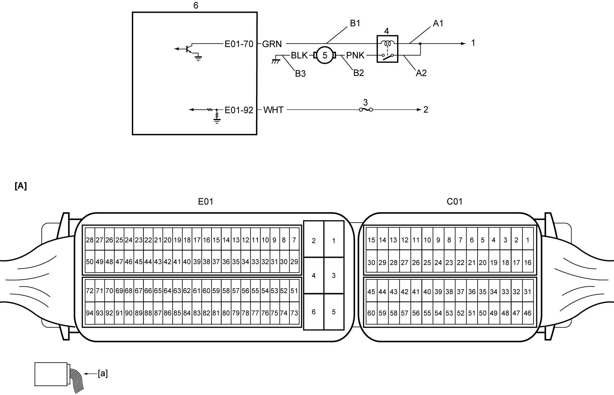

1G
| Fuel Pump and Its Circuit Check |
Circuit Diagram

 "Expand image")
| [A]: | ECM connector (View: [a]) | B2: | Fuel pump power supply circuit | 3. | “IG COIL” fuse |
| A1: | Fuel pump relay power supply circuit (coil side) | B3: | Fuel pump ground circuit | 4. | Fuel pump relay |
| A2: | Fuel pump relay power supply circuit (switch side) | 1. | To main relay | 5. | Fuel pump |
| B1: | Fuel pump relay drive circuit | 2. | To IG1 relay | 6. | ECM |
Troubleshooting
| Step | Action | Yes | No |
|---|---|---|---|
| 1 |
Fuel pump control system check
1)Remove fuel filler cap.
2)Set ignition “ON”.
3)Check that fuel pump operating sound is heard from fuel filler for about 2 seconds.
Is check result OK?
|
Fuel pump circuit is in good condition. Reinstall fuel filler cap.
|
Go to Step 2.
|
| 2 |
Fuel pump relay power supply circuit check
1)Reinstall fuel filler cap.
2)Set ignition “OFF”.
3)Remove fuel pump relay from individual circuit fuse box No.1.
4)Check for proper terminal connection to fuel pump relay connector.
5)If connections are OK, set ignition “ON”.
6)Check that voltage between each of “A1” and “A2” and ground is battery voltage.
Is check result OK?
|
Go to Step 3.
|
Repair fuel pump relay power supply circuit.
|
| 3 |
Fuel pump relay check
1)Check fuel pump relay.
Is check result OK?
|
Go to Step 4.
|
Replace fuel pump relay.
|
| 4 |
Fuel pump relay drive circuit check
1)Set ignition “OFF”.
2)Disconnect “C01” and “E01” connectors from ECM.
3)Check for proper terminal connection to “C01” and “E01” connectors.
4)If connections are OK, check the following points.
•Resistance of “B1” circuit: less than 1 Ω
•Resistance between “B1” circuit and ground: infinity •Voltage of “B1” circuit: approx. 0 V (When ignition is “ON”) Is check result OK?
|
Go to Step 5.
|
Repair fuel pump relay drive circuit.
|
| 5 |
Fuel pump relay drive circuit signal check
1)Set ignition “OFF”.
2)Connect “C01” and “E01” connectors to ECM.
3)Using service wire, connect fuel pump relay.
4)Check that voltage between “B1” and ground is approx. 0 V for 2 sec. after the ignition is “ON”.
Is check result OK?
|
Go to Step 6.
|
Replace ECM and recheck fuel pump operation.
|
| 6 |
Fuel pump power supply circuit check 1
1)Check that ignition is “OFF”.
2)Remove fuel tank.
3)Disconnect fuel pump connector.
4)Check that resistance between “B2” and ground is infinity.
Is check result OK?
|
Go to Step 7.
|
Repair fuel pump power supply circuit.
|
| 7 |
Fuel pump power supply circuit check 2
1)Connect service wire between “B1” and ground.
2)Set ignition “ON”.
3)Check that voltage between “B2” and ground is battery voltage.
Is check result OK?
|
Go to Step 8.
|
Repair fuel pump power supply circuit.
|
| 8 |
Fuel pump ground circuit check
1)Set ignition “OFF”.
2)Check that resistance between “B3” and ground is less than 1 Ω.
Is check result OK?
|
Replace fuel pump.
|
Repair fuel pump ground circuit.
|